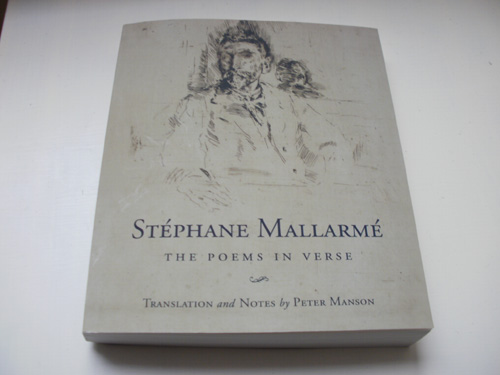

march - February 2012
March 28th

March 22nd


March 18th
Alan Protheroe
My prose collection Definite Articles will have three sections of text extracts from this journal, the sections presented under the heading From a Room in Scotland. The quoted journal entry for September 10th 2010—when I was writing about the BBC's teeing up of chancellor George Osborne, heir to the Baronetcy of Ballintaylor, to smooth the way for a swathe of impending cuts in welfare—ended thus:

I wasn’t happy with that “Popplethwaite or something” being the last word when the journal entry was printed in my book. From the back of my mind yesterday the surname “Protheroe” suddenly emerged. Bingo. The very man.
A Debretts entry online shows that it was indeed Alan Protheroe who was deputy editor of BBC Television news in the seventies, becoming editor in 1977, then assistant director BBC News and Current Affairs, before rising to assistant Director General of the BBC until 1987. He then left the BBC for a “Defence” public affairs consultancy, and is still there. In the year of the Gulf War, 1991, he was made Honorary Colonel of something called the “Pool of Army Information Officers.” As this nay doot he could “inform and educate” all the journalists in the land as to what best they ought to know, and print, about Iraq, our army in the Middle East, and Saddam Hussein.
By this time Her Majesty needless to say could not be left out of this, so Colonel Alan Protheroe, defender of the nation’s chimney stack, duly became a Commander of the Order of the British Empire. Commander Protheroe and Baronet-in-waiting Osborne. Two more threads in a stinking quilt.
March 17th
St Patrick's Day—and as it happens, revising my essay on James Thomson (B.V.) for the collection of prose newly sent off to the publishers made me think once more of James Clarence Mangan, the Irish poet who died in 1849 in Meath whilst Thomson was at that time a trainee army schoolmaster in Cork. Mangan died in poverty and alcoholism, as Thomson himself was to do likewise 33 years later in London. Though often remembered as a nationalist of poems such as “Dark Rosaleen” apostrophising Ireland as a woman, Mangan's poetry can show a ferocity of self-recrimination and despair to equal Thomson at his most pessimistic. It is the bite of pessimism in such as this from “Twenty Golden Years Ago”:

And not even Thomson presented alcoholic despair as vividly as Mangan in “Shapes and Signs”— a poem astonishingly left out of the 500-page Selected Writings of James Clarence Mangen edited by Sean Ryder published by University College Dublin in 2004. It had been rightly given the prominence of being concluding poem in Michael Smith’s selection of Mangan’s poems published by Gallery Press in 1974.

March 14th
Finished at last yesterday after a lot of final work going on for some time. This is my own copy I got spiral-bound in the local stationery shop this morning. The other copy is on its way to Etruscan Books.

Definite Articles should be out later this year, hope for an estimate date in a few weeks.
March 5th


March 2nd

A rare thing, a book that is a triumph, has arrived on these shores: a book of a French poet’s work translated and notated searching out and using all relevant international sources, done in Scotland; the book itself printed and published in Miami USA.
What a triumph it is. Great translations are poems in their own right that are acts of servitude to the original, made new and selfstanding in another time and culture. These are such. And, gloriously, there is page after page of appendixed notes—usually enough to make many think, oh well, let the academics talk amongst themselves. Not here. There is all the difference in the world between scholasticism and academicism: the latter is in the academy, the former is in the world, which can include the academy if useful, and include the circus and the henhouse, if useful. It is the place simply where we are, whoever. It is of the person in the world, therefore is truly of art.
This scholasticism is of the person who has his own unique specific: the notes can be funny, can be assiduously and scrupulously informative in deconstructing and laying out the components of an ambiguity in a poem; and always with respect to the reader understood, the reader who is not an initiate, just a person in the world of academy if need be, henhouse if need be, circus if need be, instance—wherever the person is who is reader.
The book, I say again, is a triumph. Amazon UK haven't yet got it for sale but it can meanwhile be bought online from Amazon USA here for a price that converts to UK£21.57 (£16.34 plus £5.23 postage).
March 1st
The anti-workfare demonstrations in and outside employers' premises this Saturday such as per the previous entry, are going ahead. The smokescreen put up by parliamentarians and employers about benefit penalties supposedly being lifted was merely that—a smokescreen for the media aimed at putting an end to the bad publicity of demonstrations planned and those that have taken place already. But demonstrations across the UK this Saturday March 3rd are going ahead.
The actual details of the continuing workfare scenario are here, and the list of thirty places across the UK where demonstrations will take place this Saturday is here. In Glasgow it's outside Top Shop 229 Buchanan Street at 1pm.
A full and lengthy list of employers, including sundry department stores and charity outlets, all part of the heads-in-the-trough £100 a head booty on the unemployed plus fulltime work demanded for zero pay, can be found here. And this is what the parliamentarians call "Ending the something-for-nothing society"!!
February 28th
Flyer received.

February 22nd
The Doors to Freedom
educere (Lat.) = to lead out

Pollok Public Library 1949
Looking at a book of old photographs of Pollok where I grew up I came on this 1949 photo of the first Pollok Library which opened that year, the same year as I was five years old and therefore of age to join.
Also online I came on a photo of a 1905 postcard of the Elder Park Library in Govan, the photo taken two years after that library was opened. It is as it looked fifty years later when I used to sometimes travel to it.

Elder Park Library Govan
Follows two relevant paragraphs from my introduction to the 1990 anthology Radical Renfrew.
The place where a democratic freedom of encounter with Literature has occurred is in the free public libraries. It is not that they haven’t operated censorship, but the public libraries have remained the one place where anyone can build his or her own relation with the literary world. It was in the public library in Pollok that I built mine. The Five-to-Seven department, just a green tin cupboard with about eight shelves, and the books facing out the way. You had to wrap your books in newspaper, and you had to show your hands. Then the day when I could use the Junior Department for the 7-to-14 year olds, a whole wall under the window. Real books at last, that wouldn’t be finished as soon as you got home. Of course the time came when the Junior Department wasn’t what I wanted, but I wasn’t old enough yet for the adult. I got to know the names of the A to C authors in the adult section that adjoined the Junior wall at the far end. The adult fiction went right round two walls of the building, with non-fiction in standing shelves between. What a day that would be, when you could get into that. My mother let me take the bus to Govan to use the Junior Department at Elder Park. It seemed enormous, as big as Pollok’s adult section; it had a very quiet atmosphere I’ll never forget, with really heavy stone walls, and the pillars you went in at the entrance. It was there I got to know Dickens. Then the adult section at Pollok. Then the Stirling, the Mecca of them all.
The public libraries gave me the education I wanted. Like most Scottish writers I know of my generation, I went to School and got British—mainly English—Literature. I went to the library and borrowed American, Russian and European. And these were the ones that mattered as far as I was concerned. When the hero of Crime and Punishment ran down the stairs of a close after the murder, I knew what it was he ran down. All the poetry that meant anything to me in my middle teens when I first got to like poetry—all of it that meant anything to me, I got out the library. You could choose what you wanted there, read it in your own house, say exactly what you wanted about it, or —most precious right of all — you could say absolutely nothing about it whatever.
February 20th

February 18th
Seeing my sea-word Finlay "homage" online a few entries ago, Tom Raworth privately emailed me these two “variants”, so I asked him could I put them up.
dichten = condensare.

February 16th

February 14th
Part of the New Labour re-branding of Glasgow in the 1990’s was to name a revamped city centre area “Merchant City”, a new home to luxury studio apartments and exclusive shops. It was part—along with the City of Culture promotional torch handed from city to city annually— of a Europe-wide dumping of working-class history as representing so much negative “macho workerism” that had nothing to offer tourism. Tourism was the name of the game for the shells of what had once been heavily industrialised manufacturing bases, whose manufactories had now moved overseas. “Culture” was part of the city tourism smörgasbord on offer, along with a duty placed on artists to be “forward looking”, “upbeat”, “celebratory”. The working classes were now something to be “celebrated” in their quaint salt-of-the-earth ways and their (not-too-offensive-please!) lingo, but not in their struggle for better conditions historically, not as having been engaged in anything remotely touching on that awful concept “conflict” let alone that macho workerist shibboleth of shibboleths, that risible taboo of all taboos, the notion “class conflict”. Nay, that was the past, revealed to all as the era of potbellied workingclass males who beat up their wives and buggered their weans; now we were a confident people, a diverse people, a forward-looking people. Forward with New Labour. And all the rest of the new visionaries of a dumped history.
My own take on “Merchant City” at first was that it should properly have been called “Slave-merchant City”, Glasgow like so many port cities in the UK having been so irrevocably bound up, in its growth, with that trade in exploitation. One only had to look at the names of city centre Glasgow streets—Jamaica Street, West Indies Street, Kingston Bridge—for a whiff of the slave trade to be seen still hanging in the city air. But it was not the slave merchants apparently we were supposed to be thinking about: it was those worthy tobacco merchants, we were told, who were at the heart of the city’s rise to greatness; and who once could be seen taking the air, in all their finery, on the broad plainstones near the Trongate.
As instance of the humanly forgotten, I put up on this journal recently, and without comment, an extract from a report to Parliament of 1857 in which a woman of no given name was described living in squalor in the town of Callander; the woman had lost possession of her faculties, and was seen rubbing her own faeces in her hands, in her abstraction. This was passingly observed in the report to parliament by commissioners asked to investigate the state of provision in Scotland for “lunatic and fatuous people” of the time.
Another of these nineteenth century UK Parliamentary reports of commissioners sent into the populace, this time in 1843, is on the condition of children in Britain working in mines and factories. And here we get a glimpse of what this “merchant city” of Glasgow, in the very district where the tobacco factories were based, and from where children were daily recruited to work in them, actually looked like at the time of the report:

This is the reality of “Merchant City”, this is the past which parliamentary politicians and city councilors would rather bury, and forget. That burial is linked to and part of ongoing destruction of public welfare facility, and the usefulness of institutions such as trade unions that the descendants of these poor people described above fought to establish on their own communal behalf. What is instead going on now is not just an attack on these people’s descendants in the present; it involves a fullscale cultural attack, “Merchant City” and all, on the available meaning of the past.
February 9th
This is a double-page scan taken not quite at random from Tom Raworth’s newly published 35-page booklet of his poems Pleasant Butter. Newly re-published, that is, in that it’s a re-publication of one of forty years ago long since unavailable.

I love Tom Raworth’s work especially in these small publications that have appeared over the fifty years of the man’s publishing. The 600-page Collected in the Carcanet edition is absolutely necessary; but the spirit, the breath, the dash and the elegance are always more keenly felt by myself in the sundry little publications that are not far from the poet’s hand. Carcanet is a corporate publisher, and it shows. If ever there is everything in a poet that is outside the corporate, it is in Tom Raworth. That non-corporate entity is intrinsic to the poetry’s intelligence.
Pleasant Butter is available online for £5 plus postage from Lulu distributors here
February 8th
Homage to that cunt Finlay

February 4th
Technical note: When I chose to restart this journal after a couple of months necessary rest, I altered the webpage url ending from /blog.html to journal/html. This I unfortunately forgot meant that people who were using a link to tomleonard.co.uk/blog.html would no longer find it working. When this finally dawned on me I asked my son Stephen who does any complicated fixing required, and he has now fixed it so that any old /blog.html link will now redirect to this page here.
Have decided that my collection of prose to come out later this year will be called Definite Articles.
February 1st
How to Run Your Democracy — Part 4,832

--------------------------------------------------------------------------------------------------------------------------------------------------------------------------